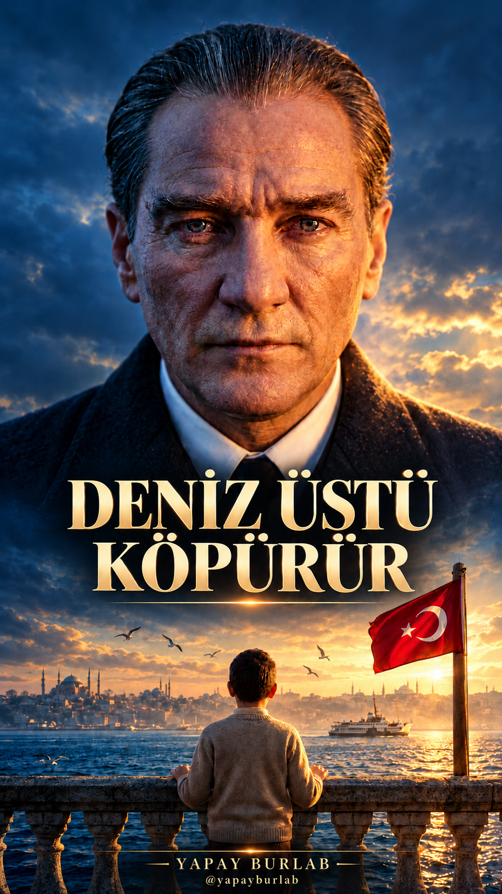

@yapayburlab · Rehber merkezi
Deniz Üstü Köpürür: Bir Türküden Sinematik Klibe
Yapay BurLab · DENİZ rehberi · 1 Kasım 2026
Bir mum, bir çocuk ve aynı ufka açılan bir final. Bu rehber, 60 saniyelik klibimizin görsel planını ve üretim adımlarını anlatıyor. Atatürk görüntüsü ve vokali sanatsal yapay zekâ canlandırmasıdır; gerçek arşiv veya gerçek ses kaydı değildir.
1. Şarkıyı sabitle
Önce kullanma hakkına sahip olduğun müzik ve vokali seç. Biz bu klipte onaylanan hazır AI cover kesitini kullandık. Son kurguda yeni bir ses üretmedik; şarkının hızını veya perdesini değiştirmedik. Başlangıç ve bitişi dinleyerek belirle; her sahnede aynı dosyanın ilgili zamanını kullan.
Şimdi sen: Kendi müziğinde 60 saniyelik anlamlı bir bölüm seç. Sözcük ortasında kesme; ilk ve son nefesi dinle.
2. Duyguyu nesnelerle anlat
Portreler söyleyişi taşır. Ara planlar duyguyu somutlaştırır: boş sandalye hatırayı, korunmuş alev bağı, çocuğun ufka bakışı geleceği çağrıştırır. Bunlar bu klibin sanatsal yorumlarıdır. Geçmişte gerçekten yaşanmış bir olayın belgesi değildir.
3. Görsel devamlılığı kur
Karakterin yüzünü, kıyafetini ve ışığını referansla sabitle. Çocuğun bej kazağını hem yakın planda hem arka açıdaki finalde koru. Her yeni karede yüz, el, kıyafet ve arka planı incele. Kamera hareketini artırırken aynı anda çok sayıda beden hareketi isteme.
4. Hareketli ara planları üret
Bu sürümün dört yeni videosu Flow’da Veo 3.1 Quality ile, dikey 9:16 ve sekiz saniyelik kaynaklar olarak üretildi. Son kurguda kaynakların yalnız uygun bölümleri kullanıldı. Üretim ekranında bu ayarlar için istek başına 100 kredi gösterildi; bu, kendi hesabındaki güncel fiyatın garantisi değildir. Önce tek deneme yap ve ekranındaki tutarı kontrol et.
Deniz çekiminde ilk deneme teslim alınamadı; tekrar üretildi. İkinci çıktıdaki sol kenar köprü ayrıntısı kadrajdan çıkarıldı. İstemde bir nesneyi yasaklamak, sonuca hiç gelmeyeceği anlamına gelmez.
5. Şarkılı yüzü doğru sesle eşle
OpenArt dudak eşleme akışında, portreye ana sesin ilgili kesitini ver. Bu klipte üç performans kaynağı ana sesin 0–20, 20–40 ve 40–60 saniyelerine karşılık gelir. Ana zaman çizelgesinde 25. saniyedeysen ikinci kaynağın 5. saniyesini kullan. Böylece görüntü kesilse de vokalin zamanı değişmez.
Önce normal hızda birlikte izle ve dinle. Özellikle uzun ünlülerde, kelime sonlarında, çene ve dişlerde uyuma bak. Ses dosyalarının hizalı olması tek başına dudakların kusursuz olduğunu göstermez.
6. Tek ses üzerinde kurgula
Kurgu programında onaylı şarkıyı tek ses katmanına koy. Üretilen videoların kendi sesini kapat. Ara planların altından şarkı kesintisiz geçsin. Yüz hareketini müziğe yetiştirmek için performansı hızlandırma. Bu teslim 720 × 1280, 25 kare/saniye ve tam 60 saniyedir.
| Zaman | Görüntü ve görevi |
|---|---|
| 0–1,6 | Su hizası ve martılar: hareketle açılış |
| 1,6–12 | Performans ve kısa çocuk bakışı |
| 12–16 | Mumdan boş sandalyeye odak geçişi |
| 16–21,6 | Şarkılı performans |
| 21,6–25 | Alevi koruyan eller |
| 25–38,4 | Yakın performans ve ellerin teması |
| 38,4–41,6 | Deniz: genişleyen nefes alanı |
| 41,6–49,2 | Sıcak ışıklı son performans |
| 49,2–52,2 | Çocuk, eli kalbinde |
| 52,2–60 | Arka açıdan yükselen tek final planı |
7. Finali bir önceki kareden doğur
Önce çocuğun yüzünü ve kalbindeki elini görürüz; sonra onun baktığı dünyaya geçeriz. Son 7,8 saniyede kamera yükselir ve geri açılır. Çocuk kaybolmaz; ufkun bir parçası olur. Son 0,8 saniyede görüntü kararır. Bu bağlantı, rastgele bir manzara eklemekten daha anlamlı bir kapanış kurar.
Şimdi sen: Son yakın planınla geniş finalinin aynı kişiyi, aynı kıyafeti ve aynı bakış yönünü taşıyıp taşımadığına bak.
Kopyalanabilir sahne istemleri
Aşağıdaki istemler bu üretimde kullanılan metinlerdir. Çıktılar her isteği birebir gerçekleştirmeyebilir. Kendi referanslarınla kullan; özellikle el anatomisini, bayrağı ve bina çizgilerini kontrol et. Final görsel istemine kendi çocuk referansını, final video istemine ürettiğin arka açı karesini ekle.
Su hizasında açılış
Vertical 9:16, 8 seconds, one continuous cinematic shot. A smooth low tracking camera moves forward over gentle deep blue Bosphorus waves at sunrise. Three seagulls glide ahead across the water toward the distant historic Istanbul skyline. Warm gold sunlight sparkles on wave crests. The camera gradually rises from water level to reveal the peaceful horizon, then eases to a stop. Photorealistic, elegant purposeful movement, stable distant architecture, blue and gold period film atmosphere, no modern bridge, no people, no text, no cuts, no music or speech.Mumdan boş sandalyeye
Vertical 9:16 cinematic macro-to-medium shot, one unbroken 8-second take. An amber beeswax candle burns on a weathered wooden table on a historic Istanbul waterfront terrace in blue hour. Begin close on a single molten wax bead sliding slowly down the candle, sharply detailed warm wax and flame. Camera performs a smooth deliberate lateral dolly around the candle, about 40 centimeters, with strong foreground parallax. Focus gradually passes from the wax to a small rustic piece of bread and an empty wooden chair beyond the table, softly framed against blue sea and distant lights. The flame bends in a gentle sea breeze but stays lit. Poetic feeling of someone remembered, intimate and tactile. Realistic physical motion, subtle film grain, cool blue shadows and warm amber highlights. No people, no clock, no writing, no extra candles, no morphing, no cuts, no music or dialogue.Alevi koruyan eller
Vertical 9:16, one continuous 8-second cinematic close-up on a weathered wooden waterfront table at blue hour. A slender amber candle at center burns in a sea breeze, flame bending sideways but staying lit. At the beginning an adult right hand, wearing a black wool suit sleeve with a crisp white shirt cuff, is already gently cupped safely behind the flame as a wind shield, far enough not to touch the fire. A child small left hand with a beige knitted cuff rests quietly on the adult wrist. Exactly two anatomically correct hands, stable fingers and contact. As the adult hand holds steady, the flame gradually rises upright and brightens naturally. Camera makes a smooth slow quarter-arc around this intimate gesture, revealing the glowing wax and fingertips against blurred deep blue Bosphorus lights. Hope and protection expressed through physical action, realistic lighting and skin, shallow depth of field, no faces, no extra fingers, no burns, no cuts, no added objects, no text, no music or dialogue.Finalin referans karesi
Create a completely new reverse-angle cinematic photograph of this same small boy in the exact beige knitted sweater, light shirt and dark brown trousers. Vertical 9:16. Medium-wide rear view, camera two meters behind him at shoulder height, boy centered in lower third, both hands resting naturally on an old stone waterfront balustrade. We see the back of his dark short hair and sweater, not his face. He gazes out across the immense Bosphorus toward misty historic Istanbul at luminous golden sunrise. To screen right a tall flagpole with one authentic Turkish flag, red fabric with correct single white crescent and five-pointed star, unfurled naturally in a sea breeze. A few gulls, distant old steam ferry, no modern bridge. Warm gold rim light outlines his small shoulders against deep blue sea. Powerful intimate-to-epic final frame, realistic period cinema, 35mm lens, atmospheric depth, natural proportions. No text, no extra people, no fantasy effects.Finalin kamera hareketi
An emotionally powerful final shot, one continuous 8-second cinematic crane pullback from this exact first frame. First second: the small boy remains still with both hands naturally resting on the balustrade, gazing over the water. Then camera smoothly rises about two meters and pulls backward four meters, gradually revealing more stone terrace, the immense Bosphorus and historic Istanbul skyline. The same child becomes smaller in the lower center; keep him clearly present to the end. The existing Turkish flag on screen right billows proudly in a steady natural breeze, retaining its exact white crescent and single star. Gulls glide across the open space, sunlight shimmers on waves, the distant ferry moves slowly. The camera eases to a graceful near-stop for the last second, a composed final tableau of child, flag and homeland. Stable geometry, natural physical scale, photorealistic golden dawn, no new people, no cuts, no morphing, no vanishing child, no text, no dialogue or music.Son kontrol ve paylaşım
Telefon ekranında baştan sona izle. Şarkı çift çalıyor mu, yüz kesmelerinde tempo değişiyor mu, ellerde bozulma var mı, final yeterince bekliyor mu kontrol et. İlk kareyi ve kapak kırpmasını ayrı incele.
Gerçekçi yapay zekâ görüntüsü ve sesini açıklamada belirt. YouTube yüklemesinde AI kullanımı alanını Evet seç. TikTok ve Instagram yükleme ekranındaki uygun AI açıklamasını kullan. Menü adları sürüme göre değişebilir. Müzik ve kayıt haklarını ayrıca kontrol et; AI etiketi telif izni yerine geçmez.
Kaynaklar: YouTube AI açıklaması · TikTok AI içerik bilgisi · Google Flow · OpenArt
Yapım ve kurgu: Yapay BurLab · @yapayburlab
İş birliği: yapayburlab@hotmail.com
Kapak örneği
